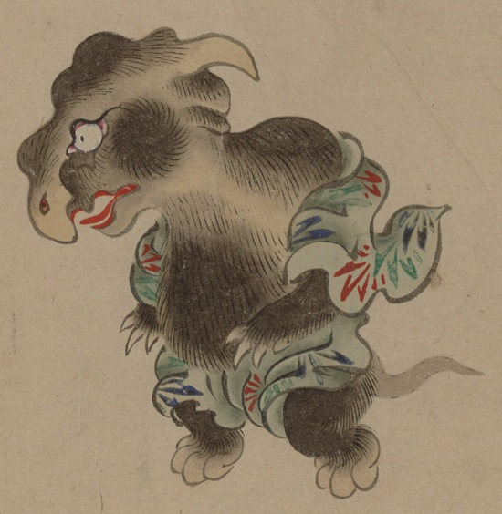

犀の化物。全身黒い毛に覆われており、灰色の地に模様の入った小袿を羽織っている。尻尾が生えており、手の爪は鋭い。
出典：親書誌：U426_nichibunken_0154：妖怪絵巻；ヨウカイエマキ／日付：2010／資源識別子：U426_nichibunken_0154_0037_0000
Copyright (c)2010- International Research Center for Japanese Studies, Kyoto, Japan. All rights reserved.